2026 광산자치아고라 · 공론장 흐름도 (진행자 · 기록자용)
말하면 → 적고 → 화면에 뜨고 → 휴대폰으로 고릅니다
진행자는 질문하고 요약해 주고, 기록자는 문서의 지금 단계 탭에 적습니다. 적은 줄은 몇 초 뒤 대형 화면 카드가 됩니다. 화면 넘기기·투표 열기·AI 다듬기는 관제반이 합니다. 2~5쪽에 단계마다 실제로 보게 되는 화면을 실었습니다.
1기록이 화면이 되는 길
🎤 진행자질문 → 발언 → “이렇게 정리해도 될까요?” 요약
✍️ 기록자Google 문서 지금 단계 탭, 오른쪽 노란 칸에 한 줄씩
🖥 대형 화면손을 떼고 몇 초~20초 뒤 카드로. 고치면 화면도 바뀜
📱 참가자③ 테이블 투표 · ⑦ 공감 ♥ (테이블 QR 카드)
2단계별 한눈에 보기
| 단계 | 🎤 진행자 | ✍️ 기록자 (문서 탭) | 🖥 대형 화면 | 📱 참가자 휴대폰 |
|---|
| 시작 전13:30~ | QR 카드를 테이블에 놓기. 기록자와 질문·제출 신호 맞추기 | 연습장 → 📂 실제 문서로 → 내 번호. 📌 쓰는 법에 참여 동 | 참석 등록 · 연결 13/13 | — |
| ① 이용 경험14:30 · 15분 | 한 사람씩 좋았던·불편한·개선점 | ① 탭 참여자 줄마다 세 칸 | 좋았던 / 불편한 / 개선점 카드 | — |
| ② 함께 할 일14:45 · 15분 | 제안마다 짧은 제목. 주민 일 / 기관 일 나눠 묻기 | ② 탭 🟢 주민 줄 · 🔵 외부 줄, 제목 | 핵심 | 테이블별 🟢·🔵 제안, 번호 자동 | — |
| ③ 우선 과제15:00 · 5분 | QR 카드 위 칸으로 투표 안내 → 마감 뒤 1위 소리 내 확인 | 화면 1위를 ③ 탭에 옮겨 적기 + 표 수 | QR + 테이블별 표 막대 | tvote 🟢 1개 + 🔵 1개 → 투표하기 |
| ④ 실행방법15:05 · 20분 | 과제마다 현황·바람·제안·첫걸음·이웃 | ④ 탭 과제 1·2 다섯 칸, 모르면 ‘추후 협의’ | 테이블별 실행방법 카드 | — |
| ⑤ 결과 확인15:25 · 5분 | 다섯 항목 읽기 → 고칠 곳 확인 → “제출해 주세요” | ④에서 고치고 ⑤ 탭 메모·✨·제출 | 테이블별 제안서 (AI 다듬은 문장) | — |
| ⑥ 주제별 공유15:30 · 15분 | 우리 제안서 확인, 틀리면 손 들기 | 문서는 쓰지 않음. 화면만 확인 | 주제별 요약 + 두 테이블 제안서 | — |
| ⑦ 공감·응원15:45 · 10분 | QR 카드 아래 칸으로 ♥ 안내 | 문서는 쓰지 않음 | QR + 떠오르는 하트 | vote 모든 제안에 ♥ (여러 개) |
| 구호15:55 | 다 함께 외치기 | — | 3·2·1 → 주고받기 → 「광산자치아고라, 파이팅!」 | — |
시간은 기본값입니다. 실제 전환은 총괄 진행자 멘트와 관제반 화면을 따릅니다. 화면이 넘어가면 기록자도 문서 탭을 바꿉니다.
시작 전13:30~14:30기록 문서 열기 · QR 카드 놓기
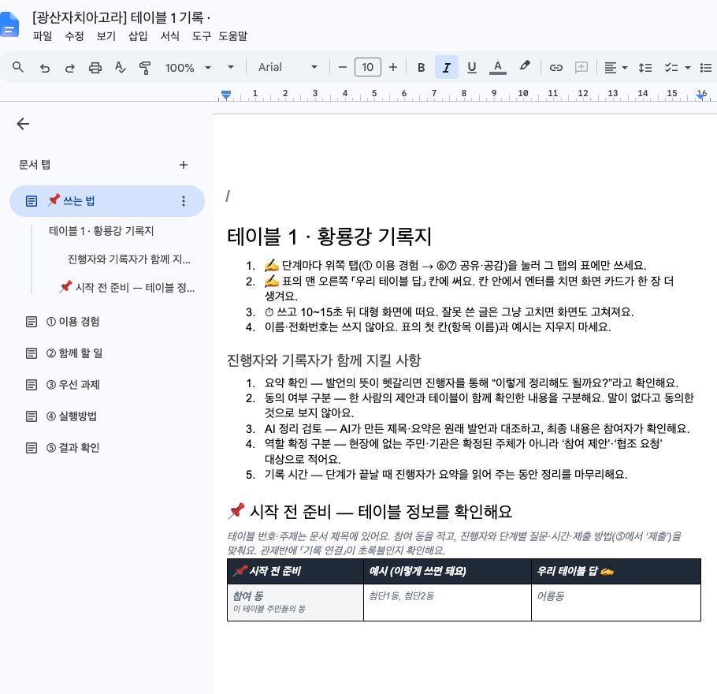
✍️ 실제 Google 문서 · 📌 쓰는 법 탭 (왼쪽에 단계별 탭)
 🖥 대형 화면: 참석 등록 · 연결 13/13
🖥 대형 화면: 참석 등록 · 연결 13/13
🎤 진행자
- 테이블 번호 QR 카드(A4)를 참가자가 보이게 놓기
- 기록자와 단계별 질문·시간, ⑤ 제출 신호 맞추기
✍️ 기록자
- 연습장 맨 끝 탭 📂 실제 문서로 → 내 테이블 번호 → 새 탭에 실제 문서
- 문서 제목의 번호·주제 확인, 📌 쓰는 법에 참여 동 적기
- “보기 전용”이면 바로 관제반에
① 이용 경험 나누기14:30 · 15분“우리는 이곳에서 어떤 경험을 하고 있나요?”
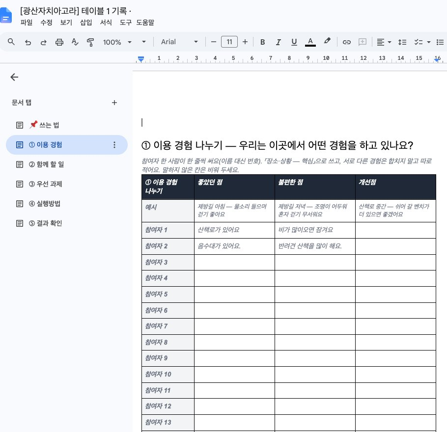
✍️ 기록자 Google 문서 · ① 탭
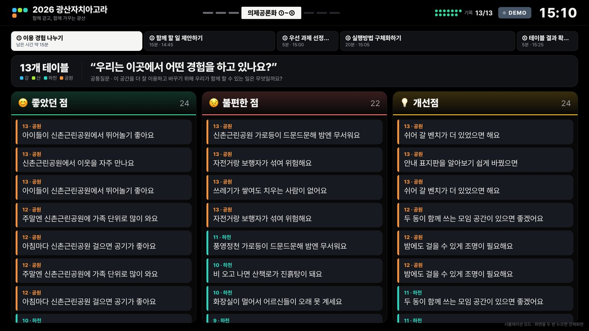
🖥 대형 화면: 😊 좋았던 · 😣 불편한 · 💡 개선점
🎤 진행자
- 한 사람씩 좋았던 점·불편한 점·개선점
- 「어디서·언제 — 무엇이」로 짧게 말하도록 돕기
✍️ 기록자 · ① 탭
- 참여자 1, 2 … 줄에 한 사람씩, 세 칸 중 말한 칸만
- 서로 다른 경험은 합치지 않기 · 이름·연락처 금지
② 함께 할 일 제안하기14:45 · 15분“우리의 경험을 바탕으로, 이곳이 어떻게 달라지면 좋을까요?”
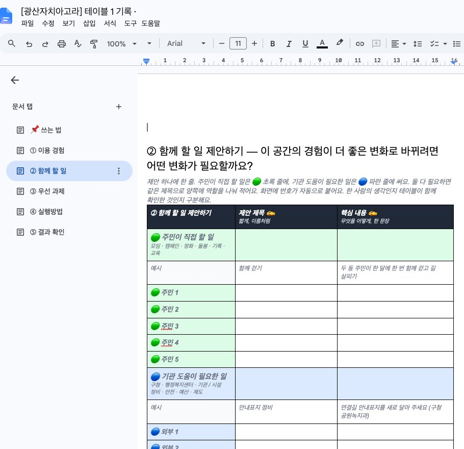
✍️ 기록자 Google 문서 · ② 탭
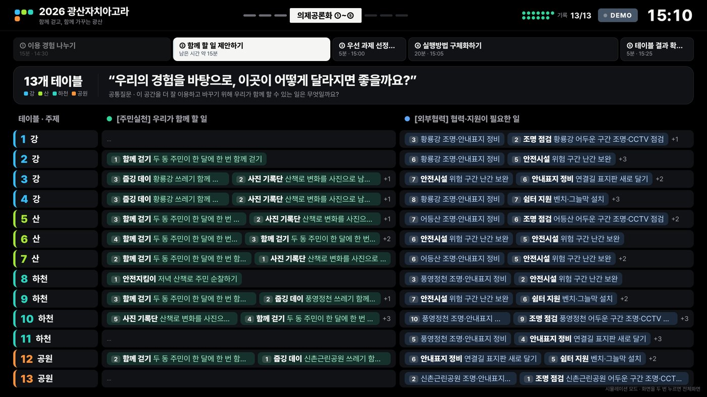
🖥 대형 화면: 테이블별 🟢 주민 · 🔵 외부 제안
🎤 진행자
- 제안마다 짧은 제목을 붙여 주기
- “주민이 직접 할 일은?” / “기관 도움이 필요한 일은?” 나눠 묻기
- ③ 전에 제안을 모두 말하게 하기 (늦게 쓴 제안은 투표 후보에 안 들어감)
✍️ 기록자 · ② 탭
- 제안 하나 = 한 줄, 제안 제목 | 핵심 내용
- 주민 일은 🟢 초록 줄, 기관 일은 🔵 파란 줄
- 회색 예시 줄은 건드리지 않기. 번호는 화면이 붙임
③ 우선 과제 선정하기15:00 · 5분“여러 제안 중 무엇을 먼저 이야기해 볼까요?”
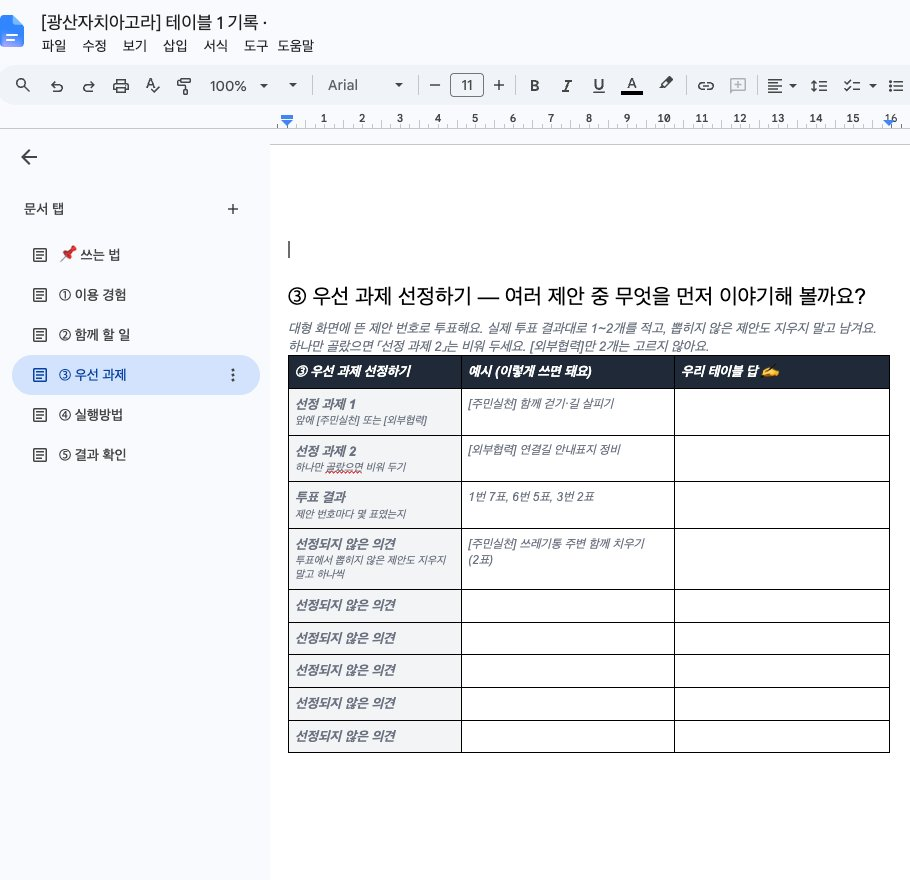
✍️ 기록자 Google 문서 · ③ 탭 (투표 뒤 옮겨 적기)
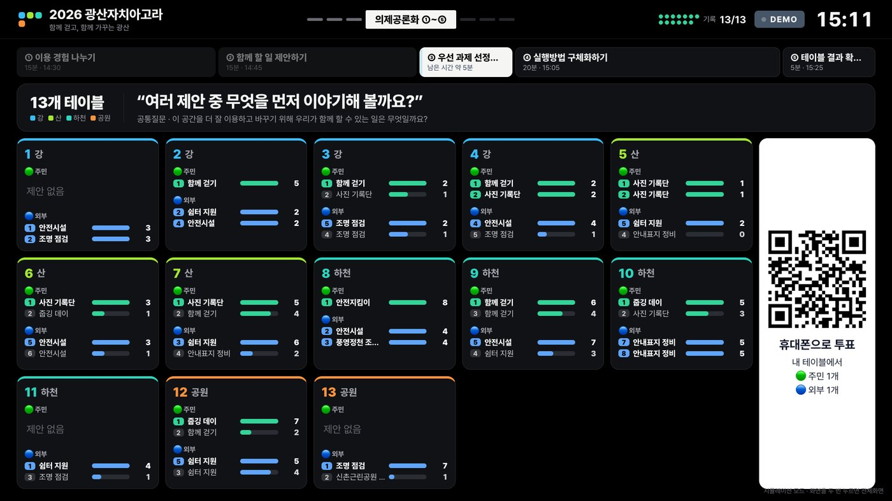
🖥 대형 화면: 표 막대 + QR
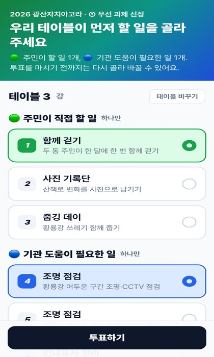
📱 참가자 휴대폰
QR 카드 위 칸을 찍으면 우리 테이블 후보가 나와요. 🟢 1개 + 🔵 1개 → 투표하기
🎤 진행자
- QR 카드 위 칸(③ 우리 테이블 투표)을 찍게 안내. 미리 찍어 두면 투표가 열릴 때 바로 보임
- 🟢 주민 1개 + 🔵 외부 1개 → 투표하기. 어려운 분은 옆 분이 돕기
- 마감 뒤 화면의 우리 테이블 1위를 소리 내어 확인. 동점이면 손들기
✍️ 기록자 · ③ 탭
- 화면 1위를 옮겨 적기: 선정 과제 1 🟢 주민 1위, 선정 과제 2 🔵 외부 1위
- 투표 결과에 번호별 표 수 (예: 1번 7표, 3번 2표 / 6번 5표)
- 뽑히지 않은 제안도 지우지 말고 아래 칸에
④ 실행방법 구체화하기15:05 · 20분“이 제안을 실천하려면 무엇부터 시작하면 좋을까요?”
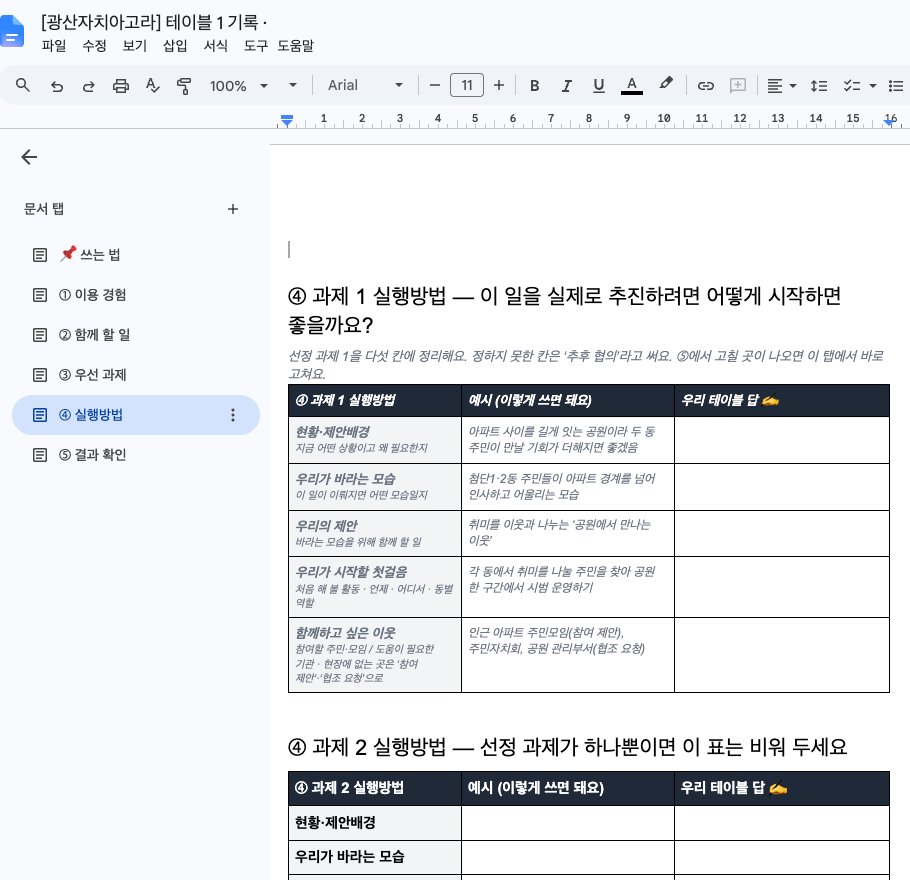
✍️ 기록자 Google 문서 · ④ 탭
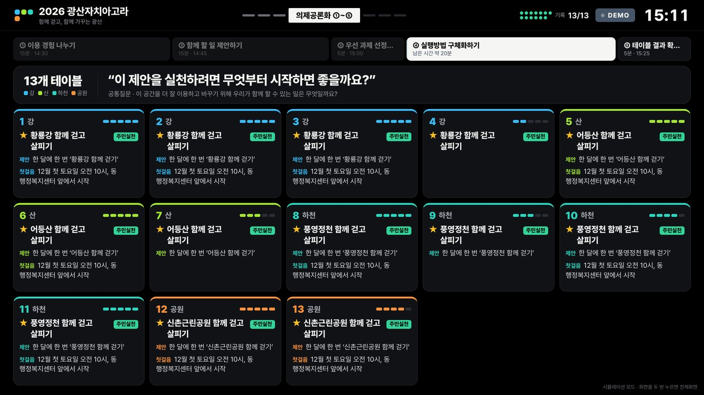
🖥 대형 화면: 테이블별 실행방법
🎤 진행자
- 과제마다 현황 → 바라는 모습 → 제안 → 첫걸음(언제·어디서·동별 역할) → 함께할 이웃
- 못 정한 것은 ‘추후 협의’로 넘기기
- 현장에 없는 기관은 ‘협조 요청’으로 말하기
✍️ 기록자 · ④ 탭
- 과제 1 실행방법, 과제 2 실행방법 표의 다섯 칸
- 과제가 하나면 과제 2 표는 비우기
- 끝날 무렵 관제반이 AI 다듬기를 돌려요 (쓰기는 계속 가능)
⑤ 테이블 결과 확인하기15:25 · 5분“정리된 내용이 우리가 이야기한 뜻과 맞나요?”
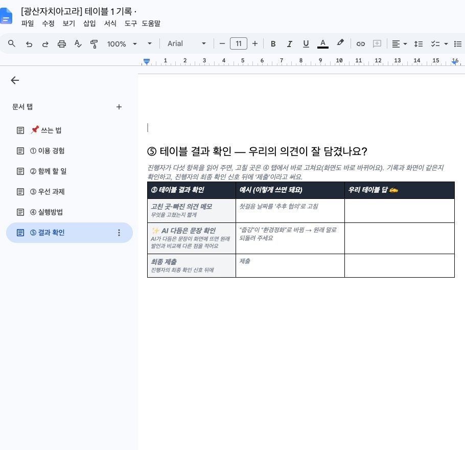
✍️ 기록자 Google 문서 · ⑤ 탭
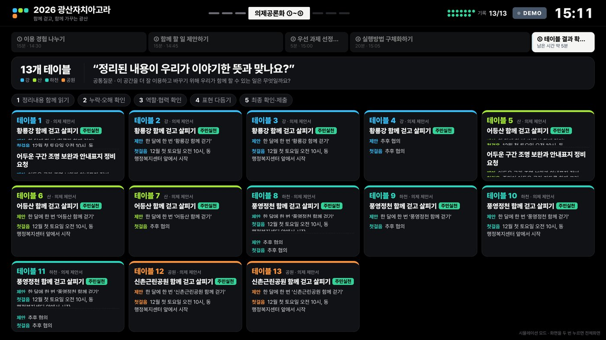
🖥 대형 화면: 테이블별 의제 제안서
🎤 진행자
- 화면의 우리 제안서 다섯 항목을 읽어 주기
- AI가 다듬은 문장이 원래 뜻과 같은지 참여자와 확인
- 다 되면 “제출해 주세요” 신호
✍️ 기록자 · ⑤ 탭
- 고칠 곳은 ④ 탭에서 바로 고치기 (화면도 바뀜) → ⑤에 메모
- AI 문장이 원래 말과 다르면 ✨ 칸에 적기
- 신호 뒤 최종 제출 칸에 ‘제출’. 그 뒤로는 고치지 않기
⑥ 주제별 결과 공유15:30 · 15분“같은 공간에 대해 어떤 의견이 나왔을까요?”
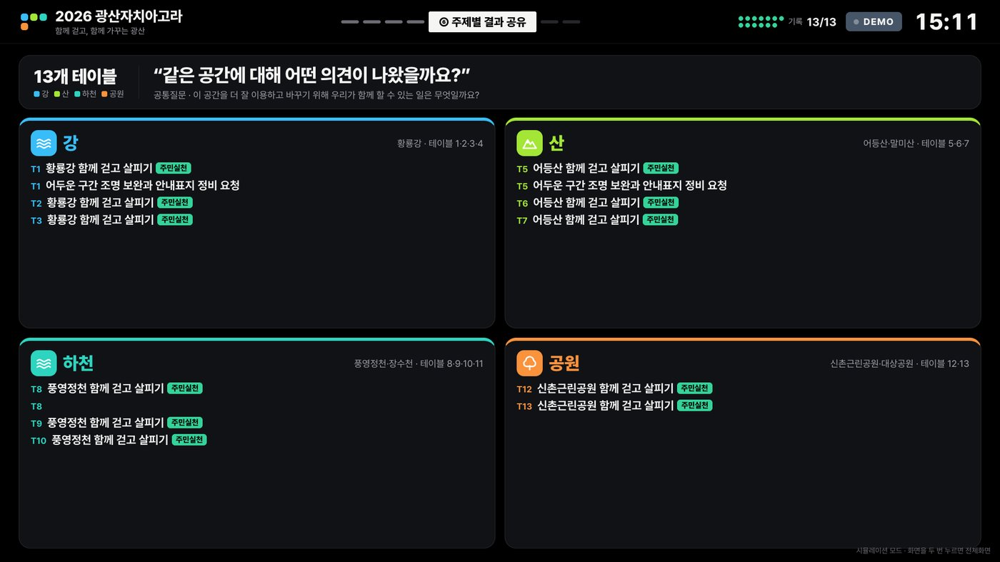
대형 화면: 4개 주제(강·산·하천·공원) → 주제마다 요약과 테이블별 제안서
🎤 진행자
- 우리 주제 차례에 테이블 제안서를 함께 보기
- 내용이 틀리면 손을 들어 관제반에
✍️ 기록자
- 문서는 더 쓰지 않아요. 화면만 확인
- 틀린 곳을 보면 진행자와 함께 손 들기
⑦ 공감 · 응원15:45 · 10분“함께 실천되기를 바라는 제안에 ♥를 눌러 주세요”
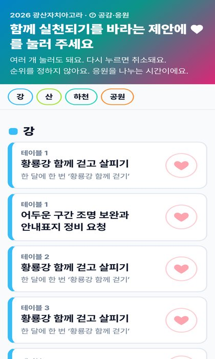
참가자 휴대폰
→
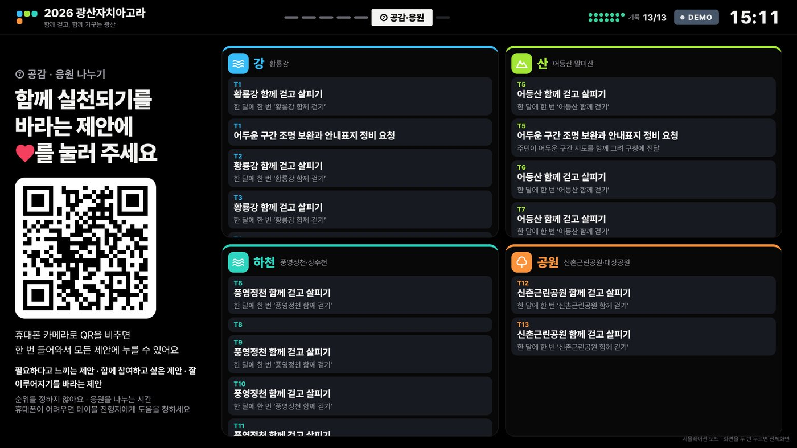
대형 화면: QR + 떠오르는 하트 (숫자 없음)
🎤 진행자
- QR 카드 아래 칸(⑦ 공감·응원)을 찍게 안내
- 모든 테이블 제안에 ♥ 여러 개 가능, 순위 없음
✍️ 기록자
- 문서는 쓰지 않아요. 휴대폰이 어려운 분 돕기
구호 · 마무리15:553 · 2 · 1 → 사회자 「함께 걷고!」 → 참여자 「함께 가꾸고!」 → 사회자 「함께 만드는!」 → 참여자 「광산!」 → 다 함께 「광산자치아고라, 파이팅!」
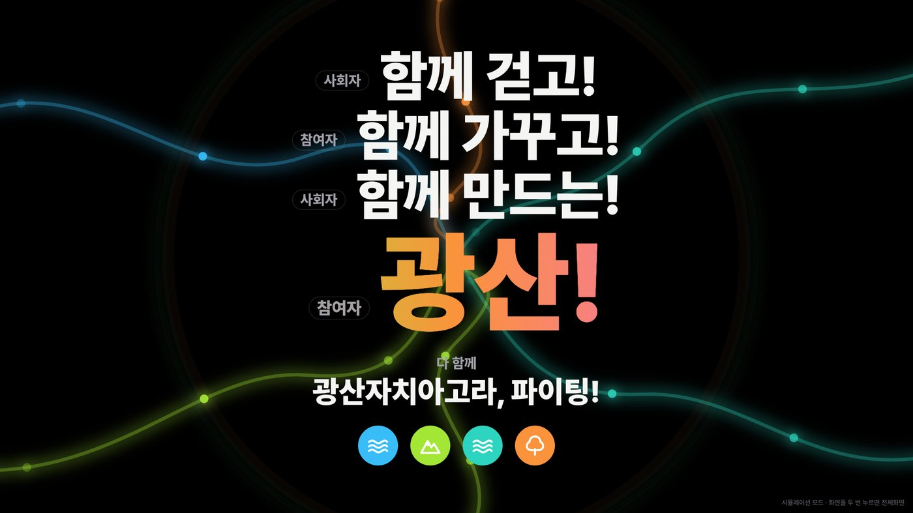
대형 화면: 구호 장면
진행자 테이블 참가자와 함께 외치기
기록자 문서는 그대로 두기 (결과 보고 자료로 보관)